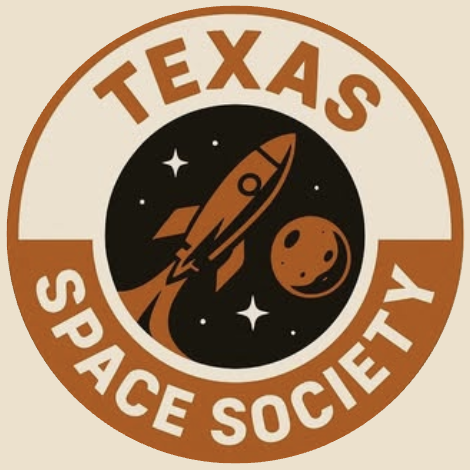

01 OPEN ORBIT
Research Team
Turn curiosity into credible work through literature reviews, technical investigations, conference submissions, and proposal competitions.
R&D / ANALYSIS / WRITING↗

TSS // UT AUSTIN // FLIGHT COMPUTER
INITIALIZING DEEP SPACE LINK
Texas Space Society brings ambitious students into the same orbit as meaningful technical work, real industry relationships, and the people who want to build what comes next.
01 / MISSION
We are building a deeper space community at UT Austin, where students can find their people, sharpen their work, and make the jump from being interested in space to helping shape it.
Through technical teams, business initiatives, and direct industry access, TSS creates more ways for students to get in the room and stay in the conversation.
Find your way in ↗02 / PROGRAMS
Different starting points.
One shared direction.
Turn curiosity into credible work through literature reviews, technical investigations, conference submissions, and proposal competitions.
Build the strategy behind the mission: partnerships, sponsorships, communications, fundraising, and the systems that move ideas forward.
A special NDA project team working alongside industry on a technical challenge. Details stay protected; the learning and responsibility are real.
03 / MEMBERSHIP
Membership is $10 for the whole semester and gives you a direct line into the community we are building.
Become a member ↗Meet professionals and alumni through access designed for real conversation.
Get thoughtful feedback on your resume, projects, applications, and next step.
Find a team, support an initiative, or help create the next opportunity.
04 / MEET THE BOARD
Five seats.
One shared horizon.
Role placeholder
Add profile ↗Role placeholder
Add profile ↗Role placeholder
Add profile ↗Role placeholder
Add profile ↗Role placeholder
Add profile ↗05 / CONTACT
Follow the Society, reach out with a question, or find the next event on our radar.